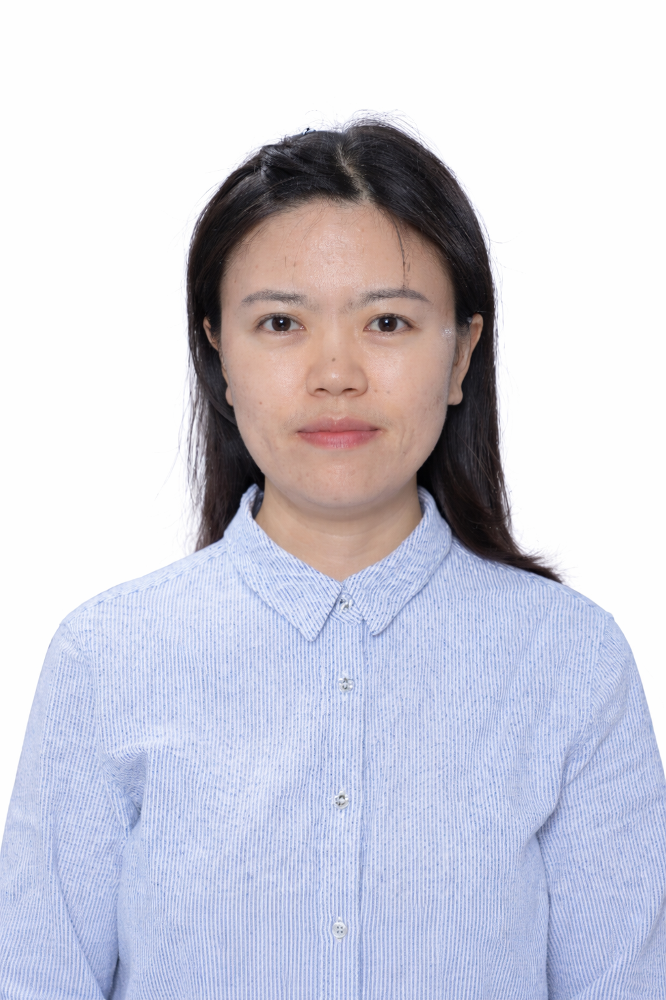
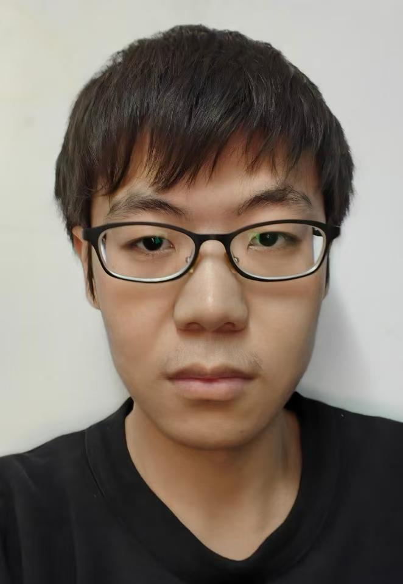
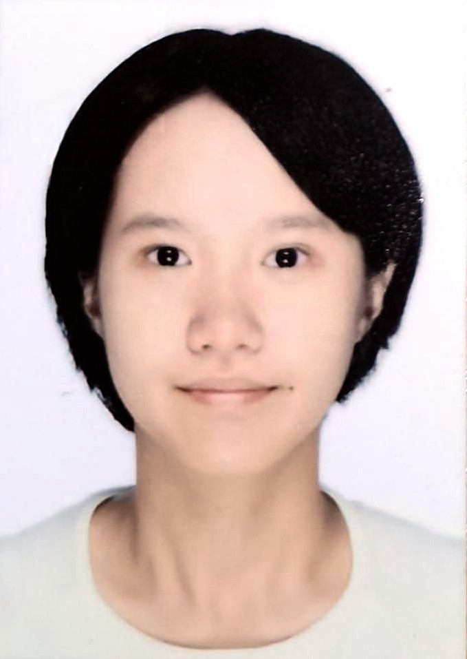

随机测量的优化
量子测量方法与资源优化
01 / OUR GROUP
以数学与计算机科学方法，
探索量子信息处理的可能性。
课题组聚焦量子算法与量子信息理论，开展以下六个方向的研究。
量子测量方法与资源优化
量子信道学习理论
噪声信道的表征与评估
线路资源优化与学习方法
量子纠错理论与方法
面向近期量子设备的算法

副研究员 · 深圳国际量子研究院
量子算法与量子信息理论
wubujiao@iqasz.cn

02 / PUBLICATIONS
按正式发表年份整理；公开预印本单列。论文标题链接至原始文献。
Physical Review Letters 137, 120201 (2026) · DOI: 10.1103/q9lf-cp11
Quantum Science and Technology 10, 035063 (2025) · DOI: 10.1088/2058-9565/adeeb9
International Conference on Learning Representations (ICLR 2025)
npj Quantum Information 10, 39 (2024) · DOI: 10.1038/s41534-024-00836-7
Entropy 26(1), 71 (2024) · DOI: 10.3390/e26010071
IEEE Transactions on Computer-Aided Design of Integrated Circuits and Systems 43(3), 868–877 (2024) · DOI: 10.1109/TCAD.2023.3325974
Physical Review A 108, 052407 (2023) · DOI: 10.1103/PhysRevA.108.052407
Quantum Science and Technology 8, 045008 (2023) · DOI: 10.1088/2058-9565/ace6cd
Nature 619, 738–742 (2023) · DOI: 10.1038/s41586-023-06195-1
Quantum 7, 981 (2023) · DOI: 10.22331/q-2023-04-17-981
Physical Review Research 5, 013065 (2023) · DOI: 10.1103/PhysRevResearch.5.013065
Quantum 7, 896 (2023) · DOI: 10.22331/q-2023-01-13-896
arXiv:2609.35129 (2026)
arXiv:2609.08058 (2026)
arXiv:2603.18479 (2026)
arXiv:2506.01657 (2025)
arXiv:2407.19499 (2024)
arXiv:2205.04730 (2022)
收录截至2026年9月30日可核验的公开成果。更多个人研究成果见https://scholar.google.com/citations?user=eqiOYFIAAAAJ&hl=en。
03 / JOIN US
欢迎对量子计算与量子信息理论
有兴趣的同学和青年研究者联系。
香港科技大学（广州） / 澳门大学
计算机或物理专业的优秀本科生、硕士生；了解量子计算与量子信息理论，具有扎实的数学基础、科研热情和良好的英文文献阅读能力。
量子算法设计、量子纠错及面向量子硬件的算法研究。
欢迎发送个人简历、研究兴趣及已有的相关研究材料。
具体项目、申请资格及培养安排以合作高校正式招生文件为准。
量子算法与量子信息方向
计算机或物理相关专业，已获得或即将获得博士学位；具有量子算法与量子信息研究基础、相关论文积累。
量子纠错、量子算法设计及量子硬件上的算法实现。
欢迎发送个人简历、代表性成果及拟开展研究的简要设想。
具体进站要求、聘期、待遇与到岗安排请邮件咨询。
GET IN TOUCH
吴步娇 · 深圳国际量子研究院